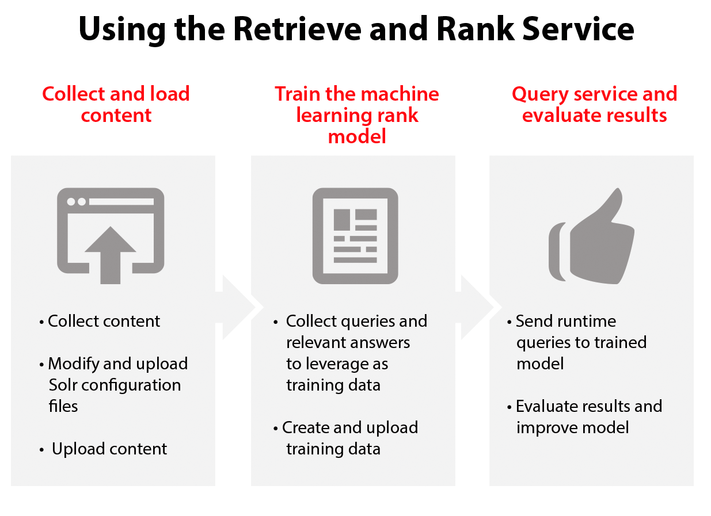

Rank and Retrieve
Posted on Fri 03 February 2017 in Learning
What's in the service?
The IBM Watson Retrieve and Rank service combines two information retrieval components in a single service:
 1. The power of Apache Solr and
2. A sophisticated machine learning capability.
1. The power of Apache Solr and
2. A sophisticated machine learning capability.
This combination provides users with more relevant results by automatically reranking them by using these machine learning algorithms.

What's Apache Solr?
Solr is a standalone enterprise search server with a REST-like API. You put documents in it (called "indexing") via JSON, XML, CSV or binary over HTTP. You query it via HTTP GET and receive JSON, XML, CSV or binary results.
Stages
1. Service Creation on Bluemix using CloudFoundry - CLI
# 1. Cloudfoundry Set the API :
$ cf api https://api.ng.bluemix.net
#Setting api endpoint to https://api.ng.bluemix.net...
#OK
#API endpoint: https://api.ng.bluemix.net
#API version: 2.54.0
# 2. Login using your Bluemix Account Credentials
$ cf login
# > Email : {Enter email here}
# > Password : {Password}
# 3. Create a service in Bluemix
$ cf create_service retrieve_and_rank <service-type> <service-name> <service-key-name>
# 4. Create a service key
$ cf create-service-key <service-name> <service-key>
# 5. Retrieve Service Key details
$ cf service-key <service-name> <service-key>
# {
# "password": "YIGlzDMD2T02",
# "url": "https://gateway.watsonplatform.net/retrieve-and-rank/api",
# "username": "b0be6eb1-09f5-46a4-9321-2bb5bc0eb758"
# }
# Save these credentials.
2. Create a Solr CLUSTER
Here, we will use curl extensively. It's a good idea to get some more information about curl.
Curl (from man-pages)
curl is a tool to transfer data from or to a server, using one of the supported protocols (DICT, FILE, FTP, FTPS, GOPHER, HTTP, HTTPS, IMAP, IMAPS, LDAP, LDAPS, POP3, POP3S, RTMP, RTSP, SCP, SFTP, SMB, SMBS, SMTP, SMTPS, TELNET and TFTP). The command is designed to work without user interaction.
curl offers a busload of useful tricks like proxy support, user authentication, FTP upload, HTTP post, SSL connections, cookies, file transfer resume, Metalink, and more. As you will see below, the number of features will make your head spin!
curl is powered by libcurl for all transfer-related features.
OPTIONS
`-X, --request
(HTTP) Specifies a custom request method to use when communicating with the HTTP server. The specified request method will be used instead of the method otherwise used (which defaults to GET). Read the HTTP 1.1 specification for details and explanations. Common additional HTTP requests include PUT and DELETE, but related technologies like WebDAV offers PROPFIND, COPY, MOVE and more.
Normally you don't need this option. All sorts of GET, HEAD, POST and PUT requests are rather invoked by using dedicated command line options.
-u, --user <user:password>
Specify the user name and password to use for server authentication. Overrides -n, --netrc and --netrc-optional.
If you simply specify the user name, curl will prompt for a password.
The user name and passwords are split up on the first colon, which makes it impossible to use a colon in the user name with this option. The password can, still.
-d, --data <data>
(HTTP) Sends the specified data in a POST request to the HTTP server, in the same way that a browser does when a user has filled in an HTML form and presses the submit button. This will cause curl to pass the data to the server using the content-type application/x-www-form-urlencoded.
2. Setting up the Cluster
# 1. Send the `username` and `password` to the Solr cluster using HTTP POST request.
curl -X POST -u "{username}":"{password}" "https://gateway.watsonplatform.net/retrieve-and-rank/api/v1/solr_clusters" -d ""
# 2. Save the solr_cluster_id {"solr_cluster_id":"sc2dbe6354_ddf3_46bb_b085_294a2d02cbbd","cluster_name":"","cluster_size":"","solr_cluster_status":"NOT_AVAILABLE"}
- Copy the
solr_cluster_id. You'll need it later.
3. Create a collection
A Solr collection is a logical index of the data in your documents.
A collection is a way to keep data separate in the cloud.
In this stage, you create a collection, associate it with a configuration, and upload and index your documents.
$ curl -u "{username}":"{password}" "https://gateway.watsonplatform.net/retrieve-and-rank/api/v1/solr_clusters/{solr_cluster_id}"